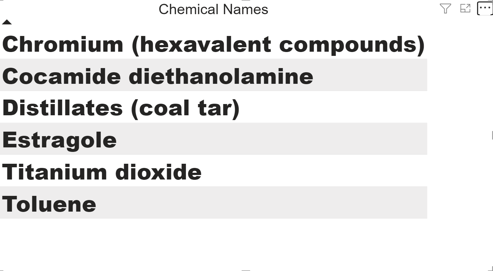
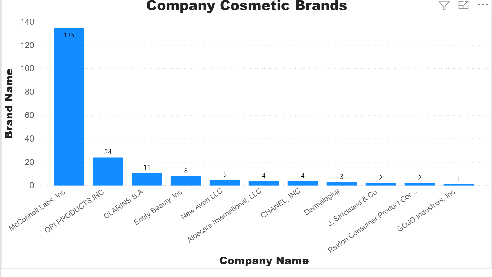
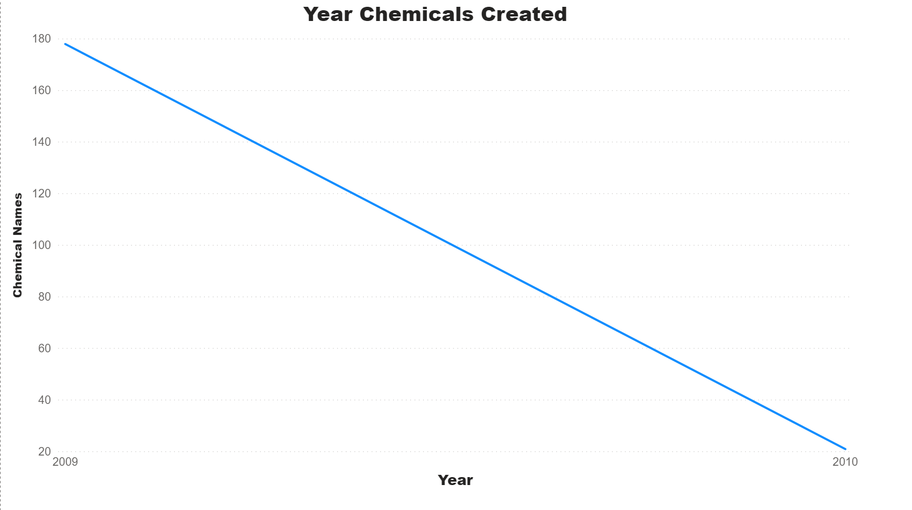
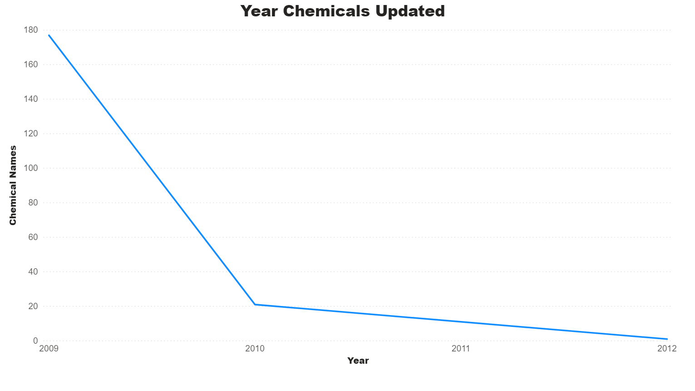
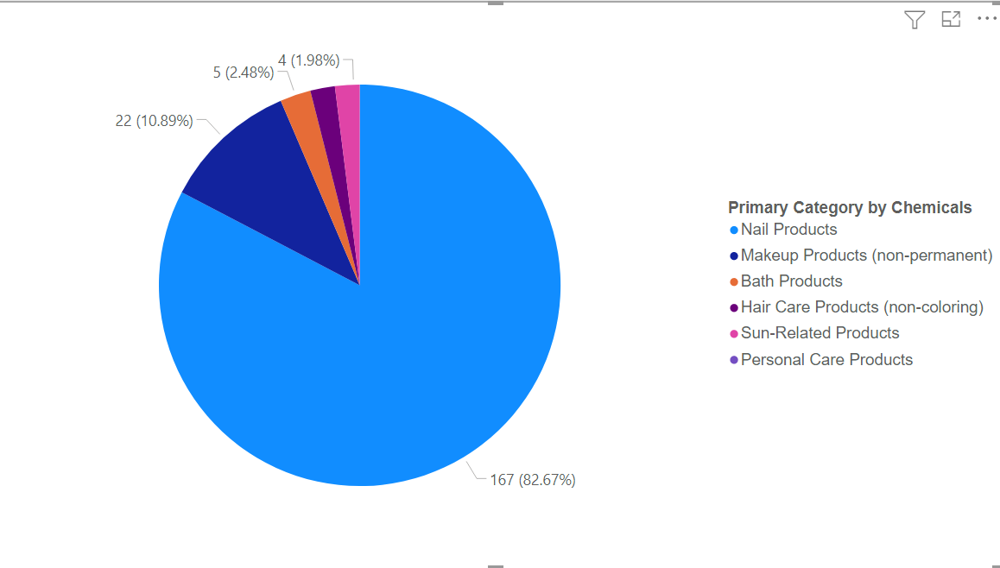

Data of Description:
The data is from the California Safe Cosmetics Program (CSCP) in the California Department of Public Health.
The primary purpose of the CSCP is to collect information on hazardous and potentially hazardous ingredients
in cosmetic products sold in California and make this information available to the public.
Consumer and worker advocacy groups are concerned because some cosmetic products contain chemicals known
or suspected to cause cancer, congenital disabilities, or damage to the reproductive system.
The California Safe Cosmetics Act (“the Act”) was signed into law in 2005. For all cosmetic products
sold in California, the Act requires the manufacturer, packer, and/or distributor named on the product label to provide to the CSCP
a list of all cosmetic products; that contain any ingredients known or suspected to cause cancer, birth defects, or other
developmental or reproductive harm.
Some ingredients reported to the CSCP as “trade secret.” If "trade secret" is listed as an ingredient for a
product on this website, it means that one or more ingredients are known or suspected to cause cancer, congenital disabilities, or other
developmental or reproductive harm. The reporting company has elected to designate the information as a "trade secret."
For more information and resources, see the CSCP webpage online
Click here.
Sample
With the dataset I acquired, I collected a sample of the data by analyzing the chemicals used in the Cosmetic Brands. There
are 6 Chemical Names, 202 Chemicals, 19 Cosmetic Brands, 11 Companies, & 199 Case Ids. The picture below shows the names of the 6 Chemicals in Cosmetic Brands.

The top 3 companies with the most Chemicals in their Cosmetic Brands are McConnell Labs. Inc, OPI Products Inc., & Clarins S.A. The picture below illustrates
the number of Chemicals in the 11 companies. These companies have a vast number of 6 Chemicals in the Cosmetic Brands they sell in the market from the image above.

In 2009, there were 178 chemicals created, and in 2010 there were 21. The manufacturer, packer, and/or distributor updated the chemicals in 2009 and 2010, with an
additional year in 2012. The images below illustrate the timeline of the year chemicals were created and updated.


The image below shows the primary categories with the number of chemicals sold in Cosmetic products. Nail Products have a higher percentage of 82.7% known or
suspected chemicals to cause cancer, congenital disabilities, or damage to the reproductive system.

The number of chemicals in these cosmetic products is very alarming. I believe each state in the United States should have the Safe Cosmetics Act passed, so the public would
be informed of these chemicals' potential, causing cancer, congenital disabilities, or damage to the reproductive system.
Interestingly, those who work with cosmetics - including barbers, hairstylists, skincare, body care, and nail salon workers - may be more vulnerable to these products' adverse
health effects because they handle more significant quantities of cosmetics with greater frequency.
For More Information
The CSCP maintains a publicly available searchable database of product ingredient information submitted by companies.
The searchable database is located online. Click here.